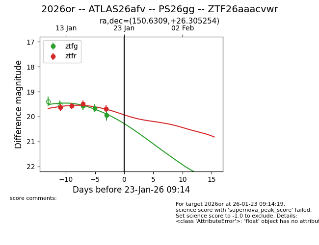
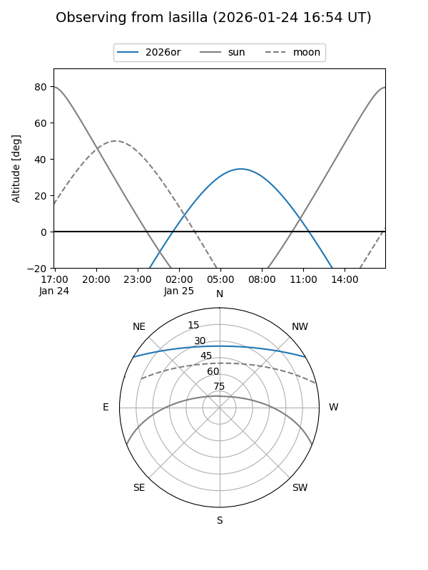
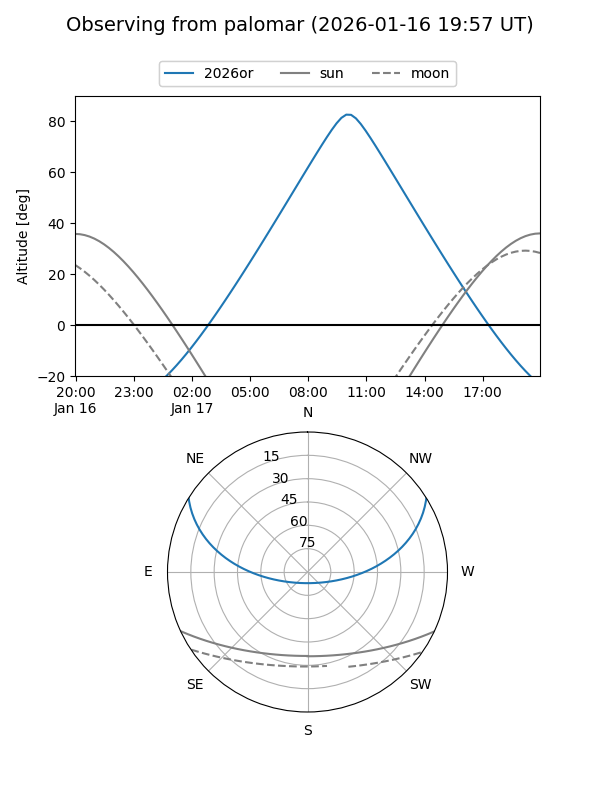
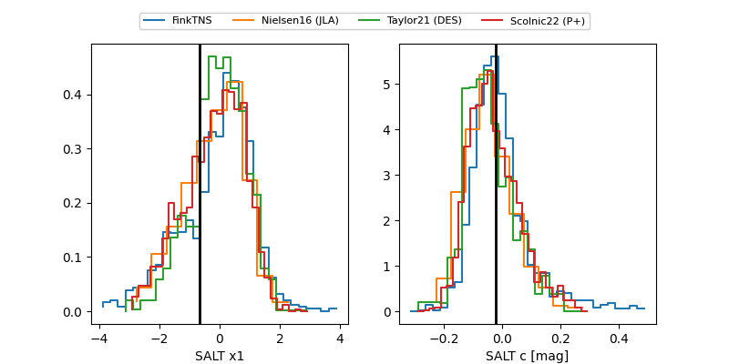

2026or
Target 2026or at 2026-01-16 14:10
Aliases and brokers:
FINK: link
Lasair: link
ALeRCE: link
TNS: link
YSE: link
alt names
ZTF26aaacvwr (ztf,fink_ztf)
2026or (tns,yse)
ATLAS26afv (atlas)
PS26gg (panstarrs)
Coordinates:
equatorial (ra, dec) = 150.6309,+26.30525
equatorial (HMS+DMS) = 10:02:31.42,+26:18:18.91
galactic (l, b) = (204.2757,+52.45141)
Flags:
Photometry:
last ztfg=19.58, ztfr=19.50
1 ztfg, 3 ztfr detections
Lightcurve

Visibility


Additional plots
